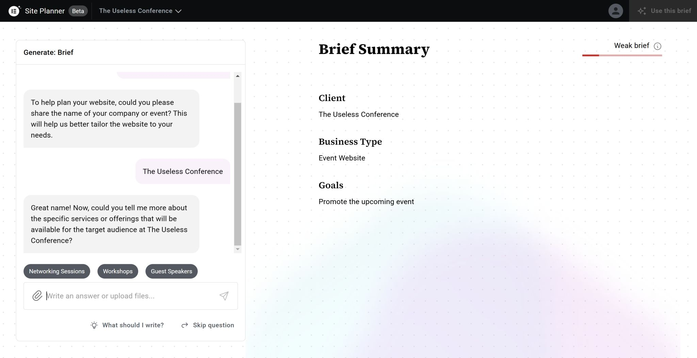

לבנות אתר WordPress שלם תוך 5 דקות – רק עם צ'אט? 🚀
פורסם במקור ב LinkedIn
לבנות אתר WordPress שלם תוך 5 דקות – רק עם צ'אט? 🚀
וורדפרס, הפלטפורמה הפופולרית לבניית אתרים, מוכרת כבר מעל ל-20 שנה כבסיס לאתרי תוכן, בלוגים ועוד.
בעשור האחרון אלמנטור - תוסף וורדפרס ישראלי - הפך לחלק בלתי נפרד מתהליך הבנייה ברמה שהם נהיו די מונופול בתחום.
לכן, כשהם משיקים כלי חדשני ליצירת אתרים באמצעות צ'אט בינה מלאכותית – זו בשורה ענקית.
השבוע אלמנטור שחחרו את AI Site Planner - כלי בינה מלאכותית שמאפשר ליצור אתר וורדפרס שלם, כולל עיצוב, את כל הדפים הפנימיים(!) וכל האלמנטים, באמצעות בקשה פשוטה בצ'אט.
כמו Co-Pilot למפתחים, הכלי הזה הופך את עבודת בוני האתרים למהירה ומדויקת יותר, ומשאיר לנו זמן להתמקד באסטרטגיה וביצירתיות.
אנחנו מתחילים לראות איך כלים כאלה משנים את תעשיית בניית האתרים, ומביאים את כולנו לסטנדרט חדש של מקצועיות ויעילות.
אם חשבתם להקים אתר לכנס קרוב, או שרציתם אתר תדמית לחלום שלכם והרגשתם שהמאמץ להקים אתר כזה רחוק מידי עבורכם - אז עכשיו הוא מונגש לכם במרחק הודעת צ'אט אחת.
רק קחו בחשבון שהוא עדיין לא תומך בשפות אחרות מלבד אנגלית, ושהתוצר של הכלי זה קובץ ZIP שצריך להוריד למחשב ואח"כ להעלות לאתר WordPress שלכם כתבנית.
#elementor #ai
